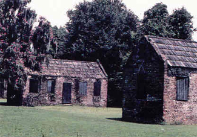
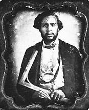
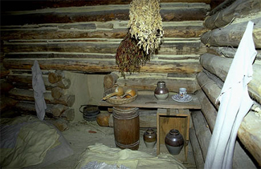

|
Slave houses were once an integral part of the Southern rural landscape. In such
houses lived the majority of the population of many plantations, and frequently
the majority of entire counties. It is, however, now difficult to imagine slave
homes with historical accuracy, for they were typically built of impermanent
construction, were rarely preserved, and were inadequately documented in
manuscripts, drawings, or photographs.
When Africans arrived in America, they did not enter an alien world in which
their traditions of construction and design had no use. Instead, the
preindustrial cultures of Europe, Africa, and native America shared similar
forms of building construction and design, thereby permitting Africans to
continue to utilize their own traditions, albeit in a new and often hostile
environment. With only a limited supply of white labor in the colonial South, it
often became the job of the slaves to construct the houses, public structures,
and farm buildings. Yet, as slaves, they were under pressure to build in ways
compatible with their masters' tastes and interests, and they blended their own
traditions with European skills and designs, passing on the synthesis to the
next generation.
|

These slave cabins, though meager, were nonetheless the
finest given to any slave. Most slave cabins were even poorer than these--badly
constructed and made of inferior materials.
|
Afro-American housing evolved over the years, the product of Afro-American
creativity, on the one hand, and the forcible constraints of a dominant culture,
on the other. As a result, the few nineteenth-century slave houses that survived
hardly exhibit overt African characteristics. Yet an examination of African
traditions suggests that these later-built survivals did spring from less
visible, African-derived traditions and were not as foreign to their inhabitants
as they might appear.
Because construction was a cooperative endeavor in traditional African
societies, involving the labor of entire villages or extended families, most
Africans who came to America had considerable experience in design and
construction. As one eighteenth-century African declared in regard to the
traditional construction of his homeland, "Every man is a sufficient architect
for the purpose." Among the building skills Africans brought to America were
brick and stone masonry, thatching, and variations of wattle and daub, frame,
and log construction. Women participated as well, being especially skilled in
the application of decorative finishes on the interior and exterior.
Traditional house forms in West Africa exhibited a rich diversity--round, oval,
square, rectangular--with rooms varying in size, usually from ten to twenty feet
or more in length or diameter. Some houses were freestanding; others were joined
or clustered in a compound. There was no standard type or size of dwelling
across all West Africa. But there was a strong degree of uniformity within the
same ethnic group and more or less within the same geographical or environmental
region. As a result, if large numbers of the same ethnic group or region arrived
in the same area in America, the prospect of their continuing their customs in
some form was enhanced. Such was the case in the coastal region of the lower
South, where slaves apparently modeled floor plans after ones in their homeland.
On the other hand, if Africans from different backgrounds arrived and were
dispersed in small lots, the opportunities for the retention of distinct African
housing traditions were more tenuous, as was the case in the colonial Chesapeake
region and in the Northern colonies.
In most cases during the seventeenth and early eighteenth centuries, slaves in
British North America tended to live in quarters dispersed about the farm,
rather than in a slave community. The preponderance of adult males in the slave
population prevented the recreation of African communal patterns. Their quarters
were typically lofts of barns, farm buildings, or extra rooms in the main house,
or perhaps the attic or basement. But with the increase in the native slave
population over the eighteenth century, the male-female ratio equalized and
two-parent slave households developed. These developments required the
construction of specific houses as slave quarters.
Slave quarters became an integral component of the plantation complex in the
Southern low country. Typically, the quarters were located behind the planter's
house. On farms with only a few slave households, slave dwellings were usually
within a short distance of the "main house." On large plantations, house
servants and artisans tended to live near the main house or their workplace in
separate quarters from field hands. Their quarters were often aligned with other
outbuildings or dependencies, forming a design element of the plantation
complex. They were also more likely to be of frame or brick construction and
more finished inside and out than were slave quarters. Field hands generally
lived near the fields where they worked. A stable or barn, a corn crib, and
perhaps a granary also formed part of the quarters complex. The field hands'
houses were typically aligned along a lane or "street" more or less
equidistantly spaced. Nearby or along the lane was the house of the overseer or
slave foreman. Field hand houses typically had a swept dirt yard, and also might
have a chicken coop, hog pen, and/or vegetable garden enclosed by paling fences
a short distance behind the houses.
In design, slave houses were typically small, plain, freestanding dwellings, one
story in height, with a gable roof and chimney exterior to one gable end. Their
floor plan usually consisted of one room down and a loft above, with one door
centered in the long wall, and perhaps one or two windows on either side of the
door, one in a gable end, or no windows at all. There were some examples of
two-unit (double-pen) houses that consisted of two identical rooms on either
side of a central chimney with back-to-back fireplaces, each room having its own
front door. In coastal South Carolina such houses had dimensions similar to
Yoruba houses in Nigeria, indicating the retention of distinct African house
forms in a region with a strong black majority.
Another type of double-pen dwelling common to the lower South was the dog-trot
house. This design consisted of two rooms of equal size divided by a wide
passageway open at each end for cross ventilation and joined by a common roof.
Yet another type found especially in the lower South was the shotgun house,
which was at least two rooms in depth, with the gable end serving as the facade.
Such houses may have been derived from Yoruba floor plans. Two-story houses or
dormitories for slaves in rural areas were quite rare, though there are extant
examples at Stagville plantation near Durham, North Carolina, featuring two
rooms down and two up, each room heated by a gable-end fireplace and presumably
housing one family each.
|

A carpenter, posing with his Square as a symbol of his trade.
He would have been afforded better quarters than an average slave in
recognition of his skill.
|
In keeping with African traditions, slaves used the yards around the house as
additional "rooms." Especially in hot weather, they cooked and washed laundry in
the backyard, and in the front engaged in such social activities as playing
music and games, dancing, and swapping stories and the news among family and
neighbors. Often a shade tree provided a "roof" for this outside "room."
Slaves customarily constructed their own houses and frequently built the main
houses of plantations. They usually built the slave quarters of logs, but there
were numerous frame examples, especially towards the end of the antebellum era,
and a few examples of stone or brick. In the coastal South slaves built houses
of tabby, a composite of equal parts of sand, lime, shell, and water. The word
tabby is African in origin, and the technique was presumably introduced by
Africans.
On both large and small plantations, from the mid-eighteenth century onward, the
most common type of slave house was the single-unit log cabin. Its design and
floor plan, in general, were similar to those of the houses of antebellum white
tenants and landowners of limited means, the home of Abraham Lincoln being the
most celebrated. Indeed, it is ironic that the log cabin, the house type
associated in American iconography with the frontier and the rise of democracy,
served also as the principal house type of slaves.
Log cabin construction proliferated in the slave South because the housing was
made from locally available material at practically no cost, was quick and
relatively easy to build, and was durable. Its thick walls, if properly chinked
with cohesive mud daubing (a technique well practiced in Africa), provided
insulation from cold weather, and its thick log walls made it less flammable
than the frame houses.
To construct the log houses, slaves used skills transmitted from one generation
to the next. Slaves learned to "read the woods just like a book" and knew the
types and forms most appropriate for construction. Among the types found in
surviving houses are chestnut, pine, poplar, and oak. Using a pole ax, broad ax,
and/or adze, they hewed the logs, removing the sapwood to expose the resilient
heart wood, and notched the logs at the corners to join them. With the aid of
family and friends, the builders raised the logs into place, often joining them
with vertical pegs passing from one log to another. Interstices between the logs
were in-filled with stones or boards and thickly plastered inside and out with a
wet clay mixture. Inside, the floor was typically of dirt, which was made as
hard as cement by pounding or molding a claylike mixture, a technique developed
in Africa. If the site was not properly drained, the floor could become quite
damp, and in some cases as "miry as a pig sty." Windows might be cut into the
walls and covered with wood shutters, rarely with glass panes. Typical chimneys
were built of wood and clay (hewn logs, boards, or wattle and daub, depending
upon the builder) and plastered thickly with clay to insulate the wood from
heat, with a firebox lined with stones. Chimney fires were common, and rain
barrels were kept nearby as a result. Construction materials for roofs varied
and included wood shingles, planks, and thatch. In many houses a loft was
created by laying planks over the upper joists; this room, accessible by ladder
or corner stairs, served as sleeping quarters for children. To finish out the
house, many slaves whitewashed their house inside and out, brightening the
interior and protecting the wood from insect infestation and decay.
Frame, stone, and brick houses represented the "top of the line" in housing for
slaves. Such houses were usually occupied by house servants or artisans and
rarely by field hands, except on larger and wealthier plantations. Like log
houses, brick, stone, and frame dwellings were typically single-unit, one-story
structures with a chimney exterior to one gable end. Though of one room, they
usually had more floor space, were more "finished" in appearance, and were more
likely to have brick or stone chimneys, and plank floors rather than earthen
ones, and customarily had larger windows with glass panes that provided more
light inside and more control over ventilation than wood shutters. In general,
they provided more comfortable living conditions than log quarters. Like log
houses, these dwellings were usually constructed by slave carpenters or masons.
Housing for slaves in urban areas differed substantially from that in rural
areas. Most slaves in towns and cities were domestic servants living in the
houses of the masters or in outbuildings or single or multiunit dwellings of
wood or brick construction behind the main house. Slaves working as artisans or
laborers lived in or near the workplace, often inhabiting tenement-style
quarters. Towards the late antebellum era the practice of boarding slaves in
rented rooms increased, sometimes with free blacks, and contributed to the
establishment of predominantly urban communities.
Furnishings in slave houses on plantations were sparse and, for the most part,
utilitarian. They were generally made on the plantation by the families
themselves, slave artisans, or even the overseers. In slaves' houses on late
antebellum plantations the principal furnishings would likely include bedsteads,
usually made by slaves, typically consisting of a plank frame with a plank or
rope bottom. Quilts commonly served as bedcovers over cornshuck mattresses and
as pallets for children, who frequently slept on the floor. Around the hearth
were found cooking utensils for open hearth cooking, such as Dutch ovens,
skillets, skewers, and heavy pots suspended from cranes. Nearby were barrels or
crockery pots used for storage of water, molasses, weekly rations (typically
corn meal and smoked pork), as well as dried or pickled vegetables or meat
procured by slaves to supplement the diet. Hanging from the ceiling joists or
stored in crocks were dried herbs and roots used for cooking and medicinal
purposes. In the middle of the room stood a dining table, usually of plank,
typically with benches for the children and chairs for the parents at each end.
A simply designed pie safe or homemade chest cabinet served for storage of
dinner and kitchen ware. A rocking chair, bureau, or trunk, homemade or second
hand from the main house, would complete the principal furnishings. Everyday
clothes typically hung from nails on the walls. Furnishings for slaves on
isolated farms or in newly developed regions were invariably less abundant and
more crude than those described.
|

The interiors of slave cabins were sparsely and
simply furnished. Slaves usually slept on the ground.
|
Though sparse in appearance, slave houses were enlivened as places for family
entertainment, and this was reflected in the furnishings. Children's playthings
included marbles, tops, "mumble pegs" and handmade dolls. Musical instruments
included the African-derived banjo, the fiddle, or mouth harp. Handcrafted
artifacts of special significance or beauty might also be present, especially in
low-country settings, for slaves wove baskets, produced clay pots and face jugs,
braided colorful rag rugs, carved wooden figures and walking canes, and created
other examples of folk art that expressed their creativity and personalized the
homes.
Artifacts of ordinary appearance were also used in special ways and endowed with
unique qualities. For example, to bar evil spirits, a conjurer's horseshoe,
root, or other device might be hung over the door or placed elsewhere. A washpot
was central to clandestine religious services throughout the South. Inside the
house or out, slaves turned the washpot upside down and gathered around, for it
allegedly "caught the sound" so the master could not hear them as they
worshipped.
Slaves lived in a variety of quarters: from crudely built shacks to well-crafted
log or frame houses, from lofts of farm buildings and rooms in the main houses
to urban tenements. For many slaves, cramped, uncomfortable, and unhealthy
living conditions resulted in severe strain on personal and family life. But
slaves did not simply submit to a completely passive role; rather, they used the
repertoire of traditional skills--a synthesis of African, European, and American
techniques--to construct or furnish houses in ways that required a considerable
measure of expertise. Using primarily materials at hand and techniques passed
down from generation to generation, slaves "made do." Indeed, slave houses, like
black music, decorative arts, and dance, reflect the improvisational nature of
Afro-American culture. Slaves used creatively what was at hand to make their
houses into more than just structures. The slaves created homes, thereby
enabling themselves to survive the rigors of bondage.
Source: Randall M. Miller and John David Smith, eds. Dictionary of
Afro-American Slavery (Westport, CT: Praeger, 1997), 341-46.
|